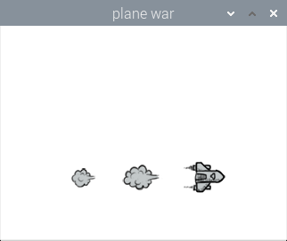

Demo Video
Introduction
This project aims at developing a plane fighting game with motion sensing and mouth opening detection. The game will start with an initial loading screen. After writing a bash script which will run the game in foreground and have the detection running in background, the game will auto start on PiTFT when the Pi is plugged in. The plane will fly freely on the screen and is controlled by the user's hand movement which is read through the BNO055 IMU sensor. There are three lives and three bombs in total when started, the player can then release the bomb by dropping the sensor. The enemies are of three types in total: One can be shot down by one hit, the other two has an indicator of remaining lives. When the sensor reads a z-axis acceleration which is greater than the preset threshold, the game control code will receive a command and get the bomb released and this operation will clear the entire screen of enemies. With the game gradually moving forward, the difficulties will increase as there are more enemies and the enemy’s moving speed will be accelerated according to a predefined index that reads the current score and adjusts the game's difficulty accordingly. There are actually two ways to release a bomb, one is the aforementioned sensor dropping and the other is the mouth opening detection of the player. When the mouth opening detection algorithm which runs in the background detects an opened mouth through Picam, it will write the result to a file and the main Python code will continually read the result. When it turns to 1, the code will control the game to release another bomb. During the game, the bomb will be used up quickly since it is powerful in eliminating enemies, the player can control the plane to get the randomly generated bomb supplies. Also by pulling the sensor backwards, a new bomb will also be reloaded. To avoid overload which will make the game too easy to play, a cd time was defined as to make continuous loading impossible. To add more fun to the game, when the player opened its mouth to release a bomb, a picture will be taken and when the game is over a picture of the player with opening mouth will be displayed. Last but not least the game also has a pause and quit button making leave-and-return an easy piece.
Objective
To complete the main functions and gaming control method mentioned above, it is first required to know how to communicate the IMU sensor with Pi and read the data through with the correct value and direction. Also the sensor data is not calibrated which will start drifting once connected, so how to accurately control the plane without pre-calibration is another issue to be later addressed. For the mouth opening detection, the algorithm runs on OpenCV which requires many calculation resources. To optimize the running speed and make the game smoother to play should be a critical improvement. Then certain features will also be considered as to adjust the game’s difficulty, like letting the player to reload the bomb through certain movements. Finally when entering the finishing stage, the stability of the whole gaming system should also be ensured. The sensor will be moved a lot by players, sometimes the communication will drop due to sudden large movements. How to reinforce the connection stability and how to improve the successful rate of mouth opening detection considering the lighting environment is changing and the perception angle of the camera is not always the same is the main goal of the improvement stage. The final demonstrations are shown to stably and seamlessly complete all the proposed functions and special features.
Design
IMU sensor
In this project we are using the BNO055 sensor which is a System in Package (SiP) solution that integrates a triaxial 14-bit accelerometer, an accurate close-loop triaxial 16-bit gyroscope, a triaxial geomagnetic sensor and a 32-bit microcontroller running the BSX3.0 FusionLib software. This sensor which is shown in the figure below is much smaller than other sensor fusion systems:
The BNO055 sensor doesn't need Kalman filters to filter out the raw sensor’s noisy output and it will also complete the data fusion on the hardware level as shown in the figure below:

The outputs of the sensor are fused data which contains Quaternion, euler angles, rotation vector, linear acceleration, gravity, heading. The BNO055 has digital bidirectional I2C and UART interfaces which are compatible with different kinds of devices.
The BNO055 sensor was originally developed on desktop and Arduino which probably also works on Raspberry Pi 2, the updated 2021-11-15 Adafruit official manual still informs that using I2C to connect and communicate the sensor with Pi will cause problems for Pi 4 (which is actually not the case). So originally we tried connecting the Pi with the sensor through UART, but the communication was not successful after a lot of tryouts. The problem we finally found is regarding the Adafruit sensor library, an entry regarding the UART bus protocol is missing and it needs more attention for repairs. So we decided to fix the I2C problem, luckily the hardware clock stretching bug was fixed only on Pi 4, we imported a new I2C library and used the ports to successfully establish the communication.
After the communication was successfully established, we wrote a Python code to read and print the sensor’s fusioned data output as follows:
The IMU sensor can return quaternion, euler angles, rotation vector, linear acceleration, gravity, heading. In this project, we used the roll and pitch angle of the sensor as well as its latitudinal acceleration and vertical acceleration. In order to eliminate the stable error caused by the IMU sensor. We read the initial sensor data at the beginning of the game and estimate the true value by the returned value minus the initial value.
Computer Vision
In this part, we used OpenCV and dlib packages in Python. First, we’ll set up a camera to monitor the stream of faces. When a face is detected, we implement facial landmark detection to extract the mouth area. When we have the mouth regions, we can compute the mouth aspect ratio(MAR). In order to estimate the region area, we used dlib to get some feature points and compute the distance between them. We can distinguish whether the users open their mouth or not by the MAR value. The Threshold of MAR is set to be 0.79. The detection of open mouth and closed mouth are shown in figures below.
Pygame User interface
The animation in waitting page is shown below. Players can simply click any part of the screen to enter the game.

On the game page, the center main part of the screen shows the playground which contains a plane, enemies, bullet, and reward bottle. Besides, there is a quit button at the left top corner and a pause button to pause the game. The current score is shown at the top of the screen. The number of life and bomb is listed at the left and right bottom of the screen. A sample game page is shown below
The pause page is illustrated below. Users can click the button on the right top corner to resume the game.
When the game is over, the restart button is shown at the top of the screen. Users can click the restart button to restart the game. The score of the game is shown in the middle of the screen. And the highest score is shown below. The highest score is stored in a file and when the score of the current game is higher than it, the highest score will be replaced. In addition, a photo caught when the user opens his mouth is shown on the pag
Game Logic
The overall game logic is shown below
In our game, the plane controlled by the user is flying forward to fight with enemies flying in the opposite direction. Users can control the speed of the plane moving front and back by changing the pitch angle of the IMU sensor. Similarly, users can change the roll angle to change the left and right movement of the plane. The function between phone speed and angle is speed = 0.1*angle for each direction. The max value at each direction is 5 pixels/frame.
Three kinds of enemies included in our game are shown below. The first kind of enemy is a small plane and will be destroyed by one bullet. The users can get a 50 score reward by destroying such a plane. The second kind of enemy has the same size as the first kind of enemy. However, it will take 4 hits to destroy such a plane and the reward is 300 points. As for the third kind of enemy, it is the boss in this game and is the most solid one. More than 10 hits are required to destroy this enemy. Moreover, its size is much larger and is difficult to avoid. The reward of beating a large enemy is 1000 points.
As for the bullet, it will be launched from our plane based on a preset routine. The speed of the bullet is also determined. When a bullet hits the enemy, the bullet will disappear and the blood of the enemy will decrease accordingly.
At the beginning of the game, the plane will carry three bombs. When the user launches a bomb, it will destroy all enemies on the screen. And the bomb number shown at the bottom will deduce by one. There are two ways to launch the bomb. The first way is dropping the IMU. When the vertical acceleration is less than -8m/s^2, a bomb will be launched. The second to launch the bomb is opening the mouth. As mentioned in the computer vision part, when the MAR is greater than 0.79, we will launch a bomb. At the same time, there are two ways to reload the bombs. Firstly, we can catch a rewarding bottle on the screen to get a bomb reloaded. In addition, users can pull the IMU to load the bomb. When the acceleration in the x-axis of the sensor is greater than 6m/s^2, it will launch a bomb. The maximum number of bombs carried by our plane is 3. In our game, there is a 5 second cooling time to avoid continuously launching bombs as well as continuously loading the bomb
Problems and Solutions
In this project, we faced following problems and came up with solutions as follows, which we hope will be helpful to others doing similar projects.
Problem 1
Communicate the IMU sensor with Pi and read the data through with the correct value and direction
The updated 2021-11-15 Adafruit official manual still informs that using I2C to connect and communicate the sensor with Pi will cause problems for Pi 4 (which is actually not the case). We Imported a new I2C library from Circuit Python driver in the reference and used the ports to successfully establish the communication through I2C.
Problem 2
The sensor data is not calibrated which will start drifting once connected, how to accurately control the plane without pre-calibration?
To eliminate the stable error caused by the IMU sensor. We read the initial sensor data at the beginning of the game and estimate the true value by the returned value minus the initial value.
Problem 3
For the mouth opening detection, the algorithm runs on OpenCV which requires many calculation resources. How to optimize the running speed and make the game smoother to play?
This problem is solved by letting the mouth detection code and the game code run by two separate scripts. We first tried to run the detection and the game in a same script with the detection algorithm sending the detection result every 10 frames, but after testing the delay turns out to be huge. So then we decided to use python.keyboard to simulate the system’s keyboard control, but this command should run in sudo mode which is not operatable for the IMU. Finally, we came up with this solution: When the mouth opening detection algorithm which runs in the background detects an opened mouth through Picam, it will write the result to a file and the main Python code will continually read the result. When it turns to 1, the code will control the game to release another bomb.
Problem 4
How to ensure the stability of the whole gaming system? The sensor will be moved a lot by players, sometimes the communication will drop due to sudden large movements. How to reinforce the connection stability and how to improve the successful rate of mouth opening detection considering the lighting environment is changing and the perception angle of the camera is not always the same.
This problem mainly addresses hardware issues, to make the connection more stable, the end of the wire is soldered with a layer of tin to thicken the wire for more stable connection. We also extended and taped the wire on to the board to reinforce the overall stability. When testing we noticed that when the camera is facing strong lighting the detection will be interfered, so we picked up a steel fence and installed the system onto the fence to provide shading for the Picam which will increase the detection successful rate.
Conclusion
This project aims at developing a plane fighting game with motion sensing and mouth opening detection. The game will start with an initial loading screen, plane will fly freely on the screen and is controlled by the user's hand movement which is read through the BNO055 IMU sensor. There are three lives and three bombs in total when started, the player can then release the bomb by dropping the sensor or open their mouth. When the sensor is dropped the entire screen of enemies will be cleared. With the game gradually moving forward, the difficulties will increase. By pulling the sensor backwards, a new bomb will also be reloaded. When the player opened its mouth to release a bomb, a picture will be taken and when the game is over a picture of the player with opening mouth will be displayed. The final demo showed a stable and seamless completion of all the proposed functions and special features.
Team
Project group picture

Haiyang Yu
hy397@cornell.edu
Gaming control through sensors and mouth detection.
Yang Jiao
yj286@cornell.edu
Gaming software and hardware with sensor communication.